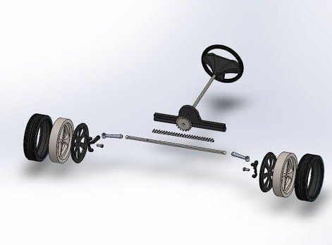
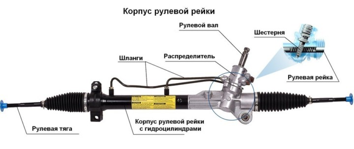

Устройство и принцип работы рулевой рейки
Рулевая рейка – элемент рулевого управления, силовой узел, с помощью которого передние колеса автомобиля синхронно поворачиваются в ту сторону, в которую водитель поворачивает руль. Знать устройство рулевой рейки, а также принцип ее работы полезно каждому автовладельцу, так как от этого устройства зависит безопасность пассажиров и пешеходов.
Принцип работы

Рассмотрим принцип работы рулевой рейки. Когда водитель вращает рулевое колесо, усилие с него передается дальше на шестерню, которая заставляет перемещаться рейку. Она передвигается влево или вправо, а вместе с ней перемещаются тяги рулевого привода, которые поворачивают ступицы или поворотные кулаки. Соответственно, на самих ступицах закреплены колеса. В итоге, при повороте водителем руля происходит синхронный поворот передних колес машины.
Реечный рулевой механизм часто оснащается усилителем, который существенно уменьшает усилие при вращении водителем рулевого колеса.
Устройство и основные составляющие

Рассмотрим, как устроена рулевая рейка. Описываться будет реечное рулевое управление в целом. Итак, его основные составляющие:
- рулевое колесо (или руль) – устройство для управления движением автомобилем в заданном направлении;
- рулевой вал – металлический стержень, который имеет шлицы (пазы) для закрепления руля с одной стороны, а с другой – шлицы для крепления самого рулевого вала к рулевой колонке;
- рулевая рейка – силовой узел, который состоит из зубчатой рейки и шестерни. Именно она приводит в движение рейку. Данный узел собран в корпус из легкого сплава и закреплен к кузову машины;
- рулевые тяги – металлические стержни. Каждая тяга с одной стороны имеет резьбу, а с противоположной – шарнирное шаровое устройство, на котором также имеется резьба;
- рулевой наконечник – деталь для вкручивания тяги. Имеет шаровый шарнир и внутреннюю резьбу.
Отметим, что иногда рулевой механизм имеет еще один компонент – демпфер рулевой рейки. Этот элемент устанавливается между тягами и корпусом рулевой рейки. Демпфер является амортизатором двустороннего действия. Основная задача демпфера – снизить вибрации на рулевом колесе. Демпфер рулевой рейки часто предустановлен на различных внедорожниках, так как именно этот тип машин чаще всего передвигается по плохим дорогам.
Виды рулевых реек
Существует три основных типа рулевых реек:
- Механическая рулевая рейка. Является простейшим вариантом рулевого механизма. Здесь поворот передних колес осуществляется только за счет физических усилий водителя. Часто для облегчения его труда устанавливается рулевая рейка, имеющая переменное передаточное число. В ней шаг зубьев изменяется от центра к краям. Впервые в истории отечественного авто такая рейка была применена на автомобиле ВАЗ-2110.
- Гидравлическая рулевая рейка. Главное отличие от механической – наличие гидроусилителя (сокращенно ГУР), который существенно облегчает вращение руля. При этом водитель не только меньше устает за рулем, но и получает большую безопасность во время езды. Рейка с гидроусилителем широко распространена на современных автомашинах.
- Электрическая рулевая рейка. Здесь усиление рулевого колеса происходит с помощью электромотора. Отдельно стоит отметить размещение электромотора: он может встраиваться в рулевую колонку, располагаться на рулевом валу или быть объединенным с рейкой. Рейка с электроусилителем руля имеет самый высокий КПД, экономична и более надежна.
Преимущества и недостатки
Сначала о плюсах реечного рулевого механизма:
- простота и малые габариты конструкции;
- небольшой вес;
- не требуется частое обслуживание;
- хорошая точность управления;
- небольшая цена.
Теперь о минусах:
- передает удары от неровностей на дорожном полотне на рулевое колесо;
- частые неисправности в виде люфтов и стуков в рейке;
- данное механическое устройство ограничено применением в большинстве случаев на лёгких автомашинах с независимой подвеской управляемых колёс.
Несмотря на свою надежность, срок эксплуатации данного силового узла зависит от качества сборки автомобиля, условий использования, стиля вождения, условий хранения. Если машина долго находится в сырости, механизм может попросту заржаветь. Экстремальная езда по кочкам и ямам и прочим неровностям также уменьшает срок эксплуатации механической рулевой рейки.
На легковых автомобилях реечный рулевой механизм остается самым распространенным. Этому способствует, прежде всего, простота конструкции, невысокая стоимость механизма, а также его небольшие габариты.
Источник: techautoport.ru